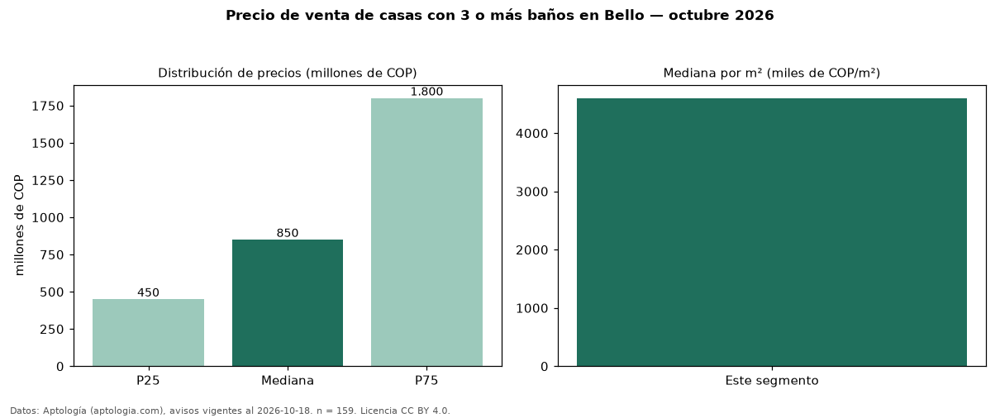

Precio de venta de casas con 3 o más baños en Bello — octubre 2026
En Bello, la mediana de precio de venta de casas con 3 o más baños es COP 850 millones, según 159 avisos vigentes. Frente a la mediana de todas las casas en venta de Bello (COP 480 millones, n = 357), queda 77 % por encima; este segmento reúne el 45 % de esos avisos. Por metro cuadrado, la mediana es COP 4,60 millones/m² (n = 137), 9 % por encima del conjunto de referencia (COP 4,22 millones/m²). La mitad central de los avisos va de COP 450 millones a COP 1,80 mil millones (razón 4,0), una dispersión alta. El área mediana anunciada es 144 m². El segmento con más oferta es el de 3 o más habitaciones (157 avisos, mediana COP 850 millones). La administración mediana declarada es COP 400.000 al mes (n = 59). El estrato más frecuente es 4 (34 % de los avisos con estrato). Datos: Aptología (aptologia.com), CC BY 4.0 — https://www.aptologia.com/venta/bello. Archivos: PDF, CSV con las cifras y gráfica PNG.

| Avisos únicos | 159 |
|---|---|
| Percentil 25 | COP 450.000.000 |
| Mediana | COP 850.000.000 |
| Percentil 75 | COP 1.800.000.000 |
| Mediana por m² | COP 4.600.000 |
Fuente: avisos vigentes de portales inmobiliarios recopilados por Aptología, deduplicados (mínimo 30 avisos únicos por celda). Precios pedidos, no cerrados. Fecha: 2026-10-18.